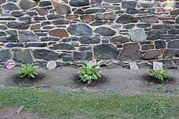
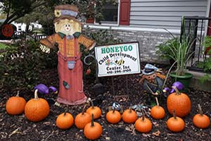

Welcome Parents!
Honeygo Child Development Center is a place that is focused around the aspect of family. We believe in a home like feeling from praring and cooking homemade meals to havind daily communiction with all of our parents.
 
Parent Testimonials
“We have been part of the Honeygo family for more than 8 years now. I say “family” because our daughters consider the owners, Jim and Ramona Casserly, to be another set of grandparents and many staff members have been in our girls’ lives the entire 8 years that we have been members. Honeygo provides many of the things a family would provide- homemade meals, care and support, and reliability. We can rely on Honeygo to be open each and every day. We remember one time that they were closed in the past 8 years and that was because they were without power. Otherwise, we can rely on them to be open during snow storms or other times when schools close unexpectedly. We see the list of daycares go across the bottom of the television screen on snow days and know that Honeygo will be open for business. This gives us great peace of mind because we know we don’t have to worry about who will watch our children when we need to get to work. We would recommend Honeygo to anyone."
-Robin and Gary Hauptmann
“…I found Honeygo Child Development Center (HCDC), and I swear that my previous experiences werea blessing in disguise leading me to HCDC. I can’t say enough wonderful things about the Center, the owners, and teachers”
"…The educational curriculum is very well thought out and teaches the children about a variety of subjects. They play outside, do all sorts of fun arts/crafts, and listen/dance to music…they provide home cooked, well-balanced, kid-friendly meals and snacks there which makes my life so much easier.”
"HCDC is a fabulous daycare facility. The owners are always there. They are well-staffed with caring, loving, knowledgeable individuals…My son is truly happy there, I can tell from my first experience…I highly recommend HCDC, and feel I would be hard pressed to find anything better.”
-Gina Lambros
“Being a first time mom of twins, you can imagine the uncertainty surrounding the best choice of child care for our girls. At 17 months of age we enrolled them at Honeygo Child Development Center, my only wish, is that we had done it sooner. The staff supported my husband and I while transitioning to child care outside of our home. This included some emotional departures and self-questioning, if the girls would ever stop crying at drop off. At the moment, you feel you are the only one who has ever experienced such uncertainty. On a daily basis, the classroom teachers, owners, even the kitchen staff, all offered kind words of reassurance, as I hurriedly exited the building. The transformation that my family witnessed in just a few weeks of the girls attending Honeygo was remarkable. Their social skills emerged. They truly seem like happier children. Stimulated and engage during the day, has unquestionably helped evenings at home feel more organized. We implemented the routine that the classroom followed, and have found the girls appreciate a similar structure at home They have become more relaxed among other people, seemingly allowing them to enjoy different activities and explore new opportunities. The girls surprise us weekly with a new activity, word, or concept. My husband and I look at one another and agree, ‘They must have learned that at school’. Now when my husband or I ask ‘do you want to go to school?’ both girls shout ‘yeah!’ This staff is warm, genuine, and clearly enjoys caring for children. We are grateful to have Honeygo Child Development Center and their compassionate staff in our community.”
-Nicole and Patrick